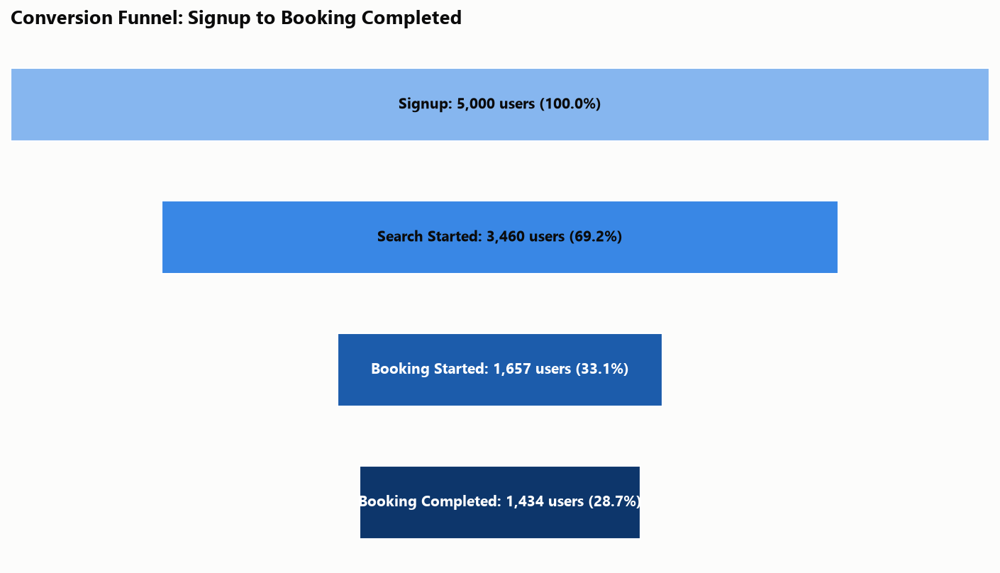
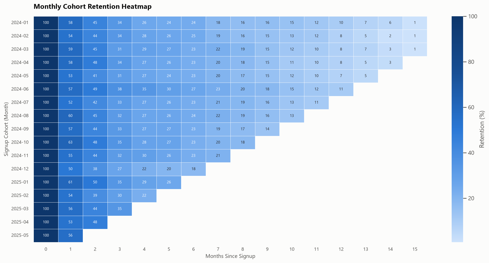
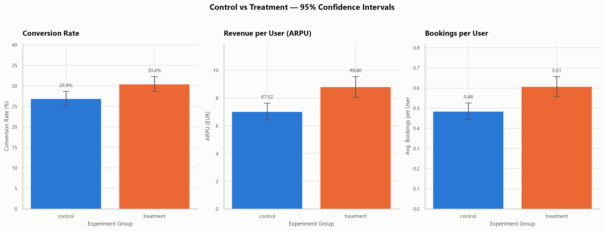
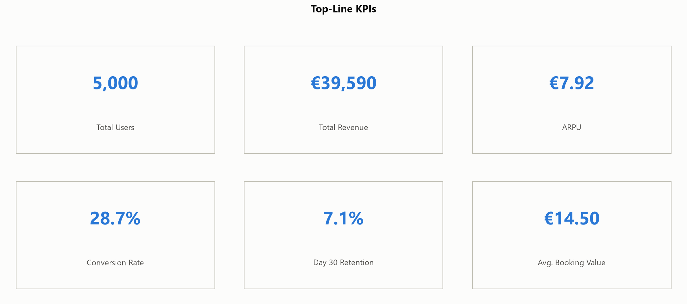

Retention, Funnel and A/B Testing
Portfolio project on a simulated European mobility platform (synthetic data)
Where do users drop out of the booking funnel, which acquisition channels bring the best users, and does a simplified booking flow improve conversion?
SQL analysis on a SQLite database, six Python notebooks covering funnel, D1/D7/D30 retention, cohorts and segmentation, an A/B test evaluated with significance testing and 95% confidence intervals, and a six-page Power BI dashboard.
Synthetic dataset generated for this project: 5,000 users, 141,813 events and 2,731 completed bookings (January 2024 to June 2025), checked with 23 validation checks and 25 automated tests.
Python, SQL, SQLite, Pandas, NumPy, SciPy, Matplotlib, Seaborn, Power BI, Pytest, Git




The full analyst workflow in one project: framing business questions, SQL, exploratory analysis, statistical testing, dashboarding and recommendations. Results are drawn from a synthetic dataset and demonstrate the method rather than real business outcomes.